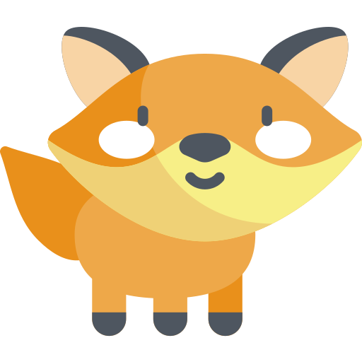
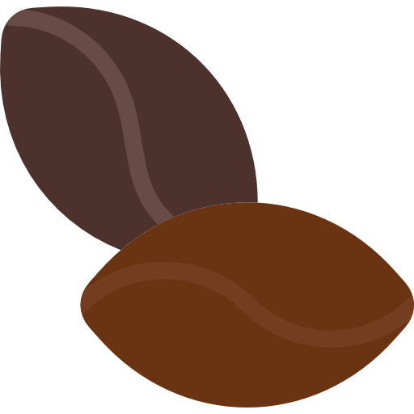
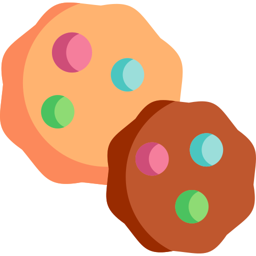

Hi.
I'm Foxy.
This is my secret cafe.
Come for a bite.
Menu
Foxy likes to keep things simple.
Only three menu items.
All high quality.

1. Secret Coffee
The rich nutty flavor of Foxy's coffee is no secret. Foxy's Secret Coffee is a great way to start your day. Lots of love included.

2. Quiet Tea
Try some of Foxy's refreshing tea to help you relax after a long hard day. The tea is made from Foxy's own home-grown tea leaves providing a fresh crisp taste!

3. Bold Biscuits
Life getting you down? Maybe you should try some of Foxy's Bold Biscuits. They're made of berries hand-picked from the forest to give you the burst of energy that you need to conquer your day. Be bold. Be Foxy.
Visit Foxy Cafe
If you click below you'll be magically trasported to our location with the use of our new Fox-Fire™ technology!
GO TO FOX CAFE